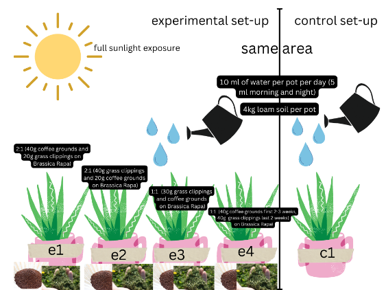

Science Project.
Determining the effective dosage of coffee grounds and grass clippings for the number of leaves of Brassica rapa subsp. Chinensis (Pechay).
I. Introduction
The general topic of composting is the recycling of food waste in order to nourish the soil. It is the microbial degradation process through which plant and animal wastes are organically decomposed to form organic manure. Using food waste as compost has a lot of benefits such as helping in enriching the soil, retaining moisture, and helping suppress plant diseases and pests. However, in this study, we would like to know how effective the use of banana and apple peelings as compost is to the growth of the Brassica rapa subsp. Chinensis (Pechay). We want to know focus on knowing its biggest benefits on the Brassica rapa subsp. Chinensis (Pechay) and if it actually helps the plant become healthier in its process of growing.
The community depends on the environment. Having a healthy environment can provide the community with beautiful scenery, as well as providing some comfort, and nutrients, and it provides oxygen for every living organism. Composting has the potential to not only improve the quality of the environment but also to do so inexpensively. We can effectively grow plants using a material that is typically found in homes by composting which is using banana and apple peelings for compost.
The SMAC institution that my PT group is engaged with will be able to gain benefit from composting in general and from my group’s composting project about using banana and apple peelings as compost since the idea of composting can provide benefits like reducing waste, conserving water, it is also able to benefit the health of the loam soil and Brassica rapa subsp. Chinensis (Pechay). These benefits can lessen the problem of the SMAC institution, especially the lack of money problem since with composting you are able to save and conserve.
Statement of the problem
Will the efficient use of coffee grounds and grass clippings be effective to the growth of the number of leaves of the Brassica rapa subsp. Chinensis (Pechay)?
Hypothesis
If you use coffee grounds and grass clippings as compost instead of chemical fertilizers to your Brassica rapa subsp. Chinensis (Pechay), then the effect will increase the number of leaves of the Brassica rapa subsp. Chinensis (Pechay).
Review of related literature
Generally, compost is a mixture of ingredients such as decayed plants and vegetables which is used as a plant fertilizer to help plants grow and improve the physical, chemical, and biological properties of soil. There are many advantages of compost for the environment and plants and soil. One benefit of using compost for plants is that it helps in a plant's growth and in enhancing its soil. But not only can it help plants but we are also able to reduce the amount of food waste and use them for a much better purpose, so it’s easy to say that it is a win-win for both. Compost also has positive effects on the environment since compost may help combat climate change.
My group will be focusing on Brassica rapa subsp. chinensis (pechay). The Brassica rapa subsp. chinensis (pechay) needs nutrients that contain significant amounts of nitrogen as well as fiber. Nitrogen is the most important factor for leafy greens. This vitamin aids in the production of chlorophyll and photosynthesis in leaf vegetables. As a result, the plants grow swiftly and create high-quality leaves. The Brassica rapa subsp. chinesis requires organic fertilizer in order to be able to use these elemental nutrients.
The type of compost we will use to be able to deliver the needed nutrients to the Brassica rapa subsp. chineses (pechay) is onsite composting. This type of composting is done by composting small food scraps onsite. Composting can reduce the amount of wasted food thrown. Materials needed for composting include coffee grounds and grass clippings.
Onsite composting helps in enriching the soil, helps retain moisture, suppress plant diseases and pests, reduces the need of chemical fertilizer, and lessens the use of wasting food. This kind of compost can help in planting since they enriched the soil, reduce the waste of food, and more, helping in enriching the growth of the plant/s. This can also affect the environment more effectively since it reduces soil erosion and promotes healthier plant growth.
The best and most efficient ways to apply and utilize compost are to mix 1-2 inches of compost into the top 3-5 inches of soil, sprinkle it on top, or both. By doing this, the compost's nutrients can be absorbed by the soil and released, feeding the plants. Composting will also aid in the soil's ability to hold onto moisture, which is necessary for biological pest control. By doing this, we are able to use compost effectively and successfully transfer it to the plant and the soil environment.
The plant part we wish to focus on the Brassica Rapa(pechay) are it’s leaves. Since this plant is more on leaves. Organic molecules and biomolecules involved are the following:
Chlorophylls | C₅₅H₇₂O₅N₄Mg
Cellulose | (C6H10O5)n
Flavonoid | C6-C3-C6
Hydroxycinnamic| C9H8O3
Since the plant is based on its leaves, we’ve researched that the best nutrients that are delivered by the compost are nitrogen and potassium. As said, nitrogen is one of the essential elements in plant growth. It plays a critical role in photosynthesis, stimulates healthy leaf and stem growth, increases protein content, and enhances plant health. While potassium is directly involved in photosynthesis (the process of converting sunlight to energy). It also encourages disease resistance and sturdy stems. Without enough potassium, a plant may have yellowish or spotted older leaves.
II. METHODOLOGY
Independent variable: Amount of coffee grounds and grass clippings as compost
Dependent variable: Increase of the number of leaves of the Brassica Rapa (pechay)
Controlled Variable/s:
Type of water
Amount of water
Amount of sunlight
Amount of soil
Aype of soil
Amount of pot
Type of pot
Type of plant
Type of coffee grounds
Type of grass clippings
Treatments/set-ups
Control set-up:
In this setup, one pot will be present, consisting of 10 pechay seedlings, planted in 4kg of loam soil, placed in an area where sunlight can be shunned upon them, and will be watered twice a day, every morning and night, with 5ml of water which in meaning they will gain 10ml of water per day. In a week, they gain 70ml of water. This setup will not consist of the two organic fertilizers which are grass clippings and coffee grounds so the ratio of this control set-up to the other 4 experimental set-ups with the use of fertilizers will be 0:4 Number of trials: 3
Experimental set-up 1:
In this setup, one pot will be present, consisting of 10 pechay seedlings, planted in 4kg of loam soil, placed in an area where sunlight can be shunned upon them, and will be watered twice a day, every morning and night, with 5ml of water which in meaning they will gain 10ml of water per day. In a week, they gain 70ml of water. This will contain the two fertilizers, coffee grounds, and grass clippings, however, we’re gonna use more coffee grounds so 40g of coffee grounds and 20g of grass clippings will be used, making this a 2:1 ratio between the amount of fertilizers used. 40gs of coffee grounds and 20gs of grass clippings will continuously add every week. Number of trials: 4
Experimental set-up 2:
In this setup, one pot will be present, consisting of 10 pechay seedlings, planted in 4kg of loam soil, placed in an area where sunlight can be shunned upon them, and will be watered twice a day, every morning and night, with 5ml of water which in meaning they will gain 10ml of water per day. In a week, they gain 70ml of water. This will contain the two fertilizers, coffee grounds, and grass clippings, however, we’re gonna use more grass clippings, so 40g of grass clippings and 20g of coffee grounds will be used, making this a 2:1 ratio between the number of fertilizers used. 40gs of grass clippings and 20gs of coffee grounds will continuously add every week Number of trials: 4
Experimental set-up 3:
In this setup, one pot will be present, consisting of 10 pechay seedlings, planted in 4kg of loam soil, placed in an area where sunlight can be shunned upon them, and will be watered twice a day, every morning and night, with 5ml of water which in meaning they will gain 10ml of water per day. In a week, they gain 70ml of water. This will contain the two fertilizers, coffee grounds, and grass clippings, both will have an equal share, meaning 30gs of coffee grounds and grass clippings, making this a 1:1 ratio. Each 30g of fertilizer will be added every week. Number of trials: 3
Experimental set-up 4:
In this setup, one pot will be present, consisting of 10 pechay seedlings, planted in 4kg of loam soil, placed in an area where sunlight can be shunned upon them, and will be watered twice a day, every morning and night, with 5ml of water which in meaning they will gain 10ml of water per day. In a week, they gain 70ml of water. This will contain both the coffee grounds and grass clipping as fertilizer, however in this first 2-3 weeks, 40g of coffee grounds will be only used for that every 2-3 weeks and the remaining 2 or 3 weeks, 40gs of grass clippings will be used for that remaining 2 or 3 weeks onto the plant. Number of trials: 5
EXPERIMENTAL DATA TO BE MEASURED OR OBSERVED
Materials needed:
Procedures
III. BIBLIOGRAPHY
Organics, A. 1. (2019, May 20). Nutrients – What Plants Need and Why! A1 Organics. https://a1organics.com/education/nutrients-what-plants-need-and-why/
- Nutrients that would benefit the most for the Brassica Rapa.
https://www.ck12.org/book/cbse_biology_book_class_xi/section/13.5/
- Important of nitrogen to living and it’s effect on plants.
https://www.sciencedirect.com/topics/agricultural-and-biological-sciences/nitrogen-metabolism#:~:text=Nitrogen%20metabolism%20of%20plants%20is,for%20legumes%2C%20and%20ammonium%20assimilation.
- Nitrogens metabolism of plants.
Potassium for crop production. (n.d.). UMN Extension. https://extension.umn.edu/phosphorus-and-potassium/potassium-crop-production
- Research on the effect and use of Potassium to plants especially the leaf parts.
NCBI - WWW Error Blocked Diagnostic. (n.d.). https://www.ncbi.nlm.nih.gov/pmc/articles/PMC6259264/
- Biomolecule/Molecule of the Brassica Rapa’s leaf part and it’s structure and description involved.
https://www.nrdc.org/stories/composting-101
- Research on the general idea of composting.
https://letsplantsomething.wordpress.com/2010/08/13/pechay-cultural-management/”
- How pechay should be managed in planting.
https://www.epa.gov/sustainable-management-food/types-composting-and-understanding-process
- Different types of composting and each having it’s own benefit. Researching on which type of composting is most suited for the experiment.
https://www.epa.gov/sustainable-management-food/types-composting-and-understanding-process
- Different types of composting and how it should be processed.
https://earthmatter.org/wp-content/uploads/2016/08/tip-sheet-how-to-use-compost-cpts-htuc-f.pdf
- To show the method on how to compost right.
(https://www.almanac.com/plant/cabbage)
- Harvesting and planting plants that are more on leaves which using cabbage as example however we are using pechay.
IV. VISUAL DOCUMENTATION OF INITIAL SIP SET-UP

This is Ericka Pia Calizo Lao.
She adores cats and now has six adorable felines in her house! She is an absolute cat lover.
She frequently prioritizes others above herself.
She’s a very loving person but doesn’t tell anyone that she does. Instead, she shows them that she does.
She may be quite bashful, but when she's with someone she feels at ease with, it's as if a whole other person has emerged.